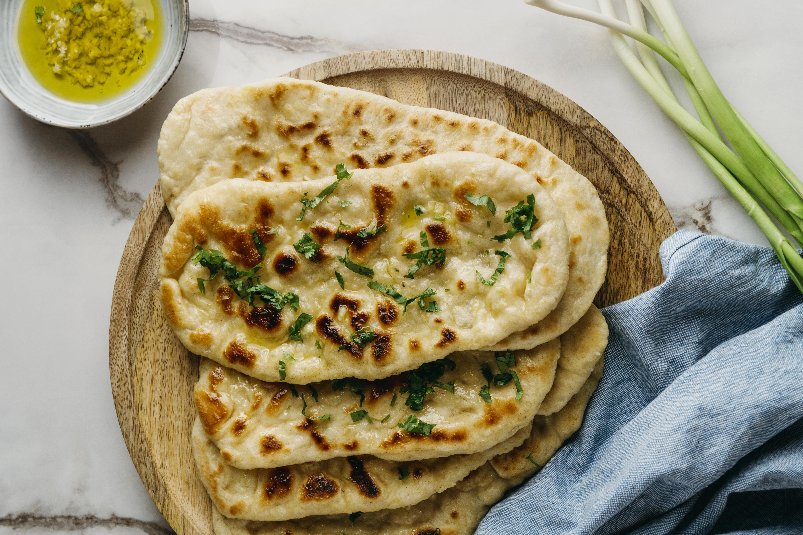

Indian Naan Recipe
Indian Naan Recipe

This is among the most sort after Indian naan recipe that's
broiled. My family enjoys it so much that I decided to share it.
It can be accompanied with any Indian curries with chicken salads.
Yeeeeeeeerrrs! And the most incredible thing? Naan
dough is so easy to make. Really, there is nothing tricky about it at all!
Ingredients

- ⅔ cup warm water (110 degrees C)
- 1 teaspoon of brown sugar
- 1 teaspoon of dry yeast
- 2 cups of wheat flour
- 2 tablespoons of plain yoghurt
- ¼ cup ghee
- 1 teaspoon of cooking oil
Directions
- STEP 1
Whisk warm water with yeast and sugar until yeast is dissolved.
Cover and let stand in a warm place for 10 minutes.
Fact: You can't make naan that bubbles up like THIS
without using yeast!! ↓↓↓

- STEP 2
In a large bowl, sift flour and salt three times. In the mixture,
add yeast, 1/2 of the ghee, an yoghurt. Mix all in a soft dough, knead until the dough is elastic and soft.

Greese a large bowl and place the dough, cover with a kitchen towel, and
leave it for 2 hours.
- STEP 3
Place the dough on a smooth surface, punch it down, and knead for 6 minutes.
Roll the dough into a circular form, divide the form into six equal pieces
For each piece, roll evenly into 3-4mm rounds
The thickness really affects the outcome. Too thin = crispier and not fluffy enough. Too thick and you won't get the bubbles.
We want the best of both worlds, ie. it should bubble up when cooked, be soft and fluffy inside and the naan itself
should be floppy, not stiff. So pull out that ruler! 😉

- STEP 4
Cover an oven tray with foil and grease the foil. Brush dough rounds with
remaining ghee an sprinkle some kalonji
Cook one piece at a time (about2 minutes per side) until it is puffed and lightly
browned.
 STEP 5
STEP 5
Sprinkle some fresh coriander leaves and nigella seeds to achieve that onion-y pop!. SERVE IT!

What to serve with naan
I feel like I'm stating the obvious here by saying that the most natural, most obvious way to use naan is to scoop and slop up curries: Butter Chicken, Rogan Josh, Dal, Tikka Masala, to name a few!
Also think uses as a wrap: Stuff them, say, with chicken stir-fry,lamb curry stew, along with some fresh Indian Tomato Salad with Mint Sauce for a complete meal in a wrap.
But then I realised: I've been devouring an inordinate amount of naan just as it is. Straight out of the skillet, with and without butter, cold, warm, reheated - and loving it like it is.
The lesson? Naan this good you can have it every which way. It's 100% incredible. Make it once and I guarantee you'll be addicted for life!
Bon Appétit
Did you enjoy this recipe?
Do you recall that Indian naans can be accompanied with different stews?
So, if you enjoyed this recipe, try out the following recipes that are incredibly yummy with our Indian naans: